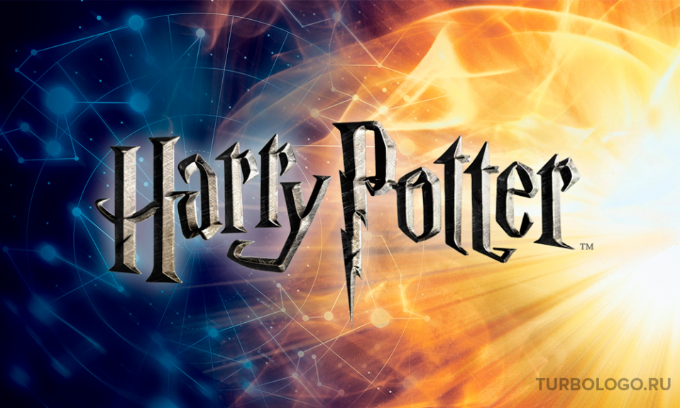

Хочу поделится новостями из моего любимого замка Хогвартс

Гриффиндор
Годрик Гриффиндор
Годрик Гриффиндор — (англ. Godric Gryffindor) английский волшебник, один из основателей школы чародейства и волшебства Хогвартс, в честь которого был назван один из факультетов
Окунемся в мир волшебства вместе
Гриффиндорам посвящается
Дорогие друзья спасибо что были с нами. На этом мы прощаемся и ждем вас на следующей неделе. Волшебных выходных